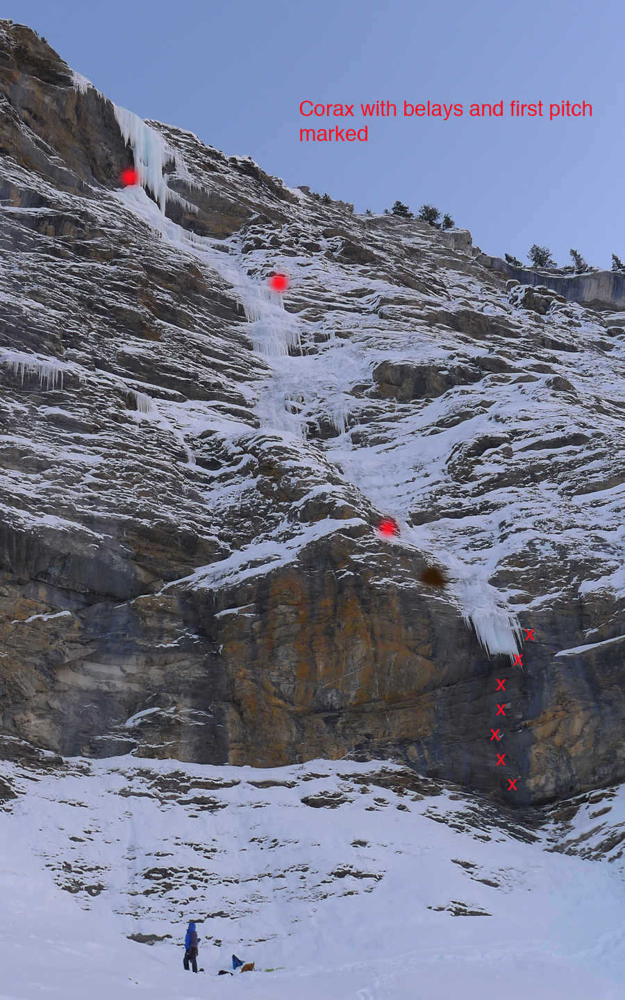
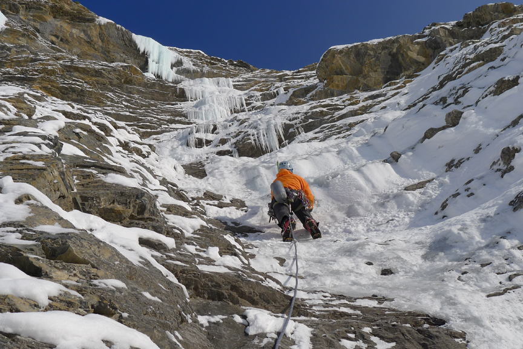
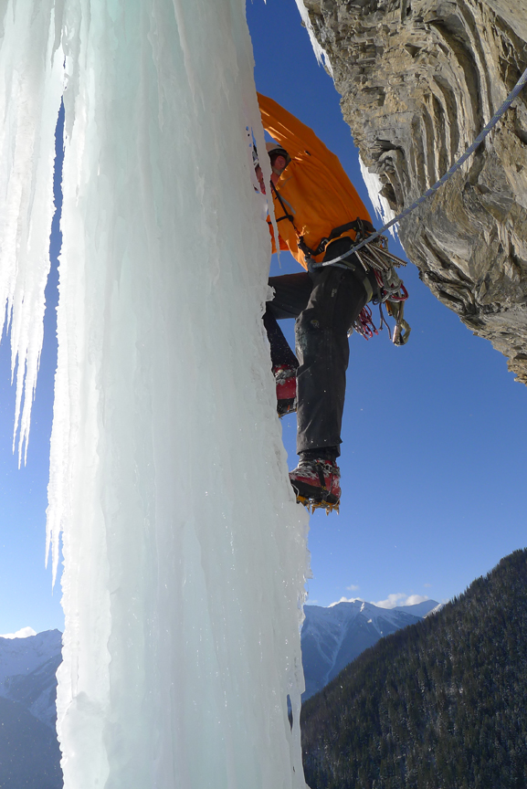
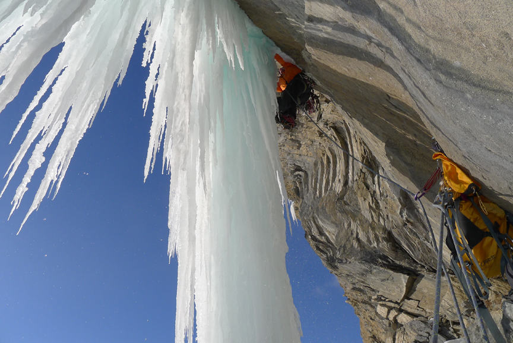
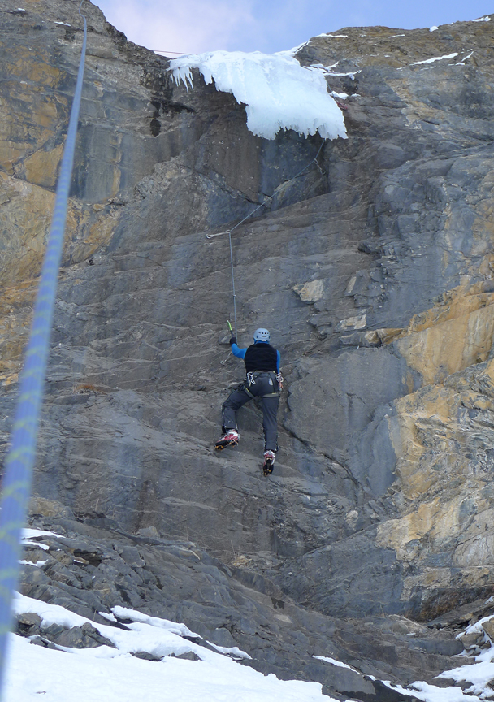
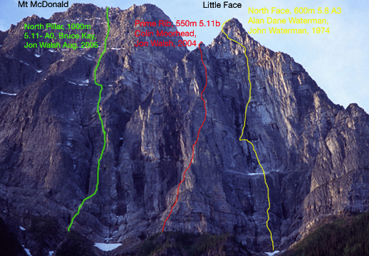
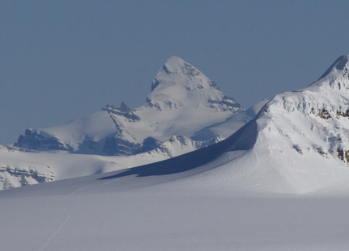

Corax, a direct mixed start
Posted on January 04, 2011
Had a good day on Mount Hunter December 30th with Ian Welsted. We finished bolting the first pitch of Corax, something I had started several years ago, and then added bolted anchors to the rest of the route. I've only seen the bottom pillar of Corax form once about ten years ago. The first ascentionests bypassed it with some mixed terrain to the right. I don't imagine there has been very many repeats at all, but it's certainly an aesthetic line that's worthy of more attention. Due to the thin nature of the route, ice screw belays would mean no shelter for the belayer, so now the route is rigged with safer bolted stations, out of harms way, and the mixed pitch makes it accessible without packing rock gear all the way up there.
It also provides an alternative to climbing the French Maid which often is either too wet, too warm, too scary, or broken off as it was in todays case (see attached photo). Two days ago, the pillar on the second pitch was about as big as I had ever seen it, and I guess its mass could't survive the -16 temps. Corax and the Maid are less than 100m apart.
Anyways, when the sun came out we found ourselves enjoying the glove free belays and some fine climbing on nice plastic ice. It was still out when we were back on the ground - good motivation to go for the redpoint on the first pitch which was successfully sent. Definitely a good choice of routes for a cold winters day.
The guidebook is vague and misleading by stating the climb is similar in nature to Louise falls. A more accurate description is:
pitch 1: M7+ / 8- , 20 meters; 7 bolts protect sustained drytooling to the dagger. Be sure to traverse to the right behind the dagger and climb up the right side of the dagger. There is a bolt going straight up the left side, but it's way harder going that way, and probably only best if the ice is very fat, and splattering the Then 8 meters of WI3, and the bolted anchor is on the left below a small overhang. The rock holds are a bit hidden from below, but very obvious from above! probably a hard insight. You could get up this pitch at about M5 A0 if you wanted too.
pitch 2: WI3 60m; Thin at first, then it fattens up. It steepens up at the end of the pitch, and just after the angle kicks back and the rope runs out, the anchor is on the right.
pitch 3: WI3 45 meters; Straight forward ice to a bolted belay behind the curtain.
pitch 4: WI5 28 meters; Steep plastic in a fine position. Ice screw anchor.

Ian starting up the second pitch

Ian stariting up the fourth pitch

Nice stemming and chimnying off the rock made the skinny pillar fairly easy and fun

Ian cleaning the first pitch after I redpointed it at the end of the day. On the way up, I added the last two bolts making it not possible to free climb it on the way up. It was sure satisfying to walk back down car after having had to try hard, and successfully send the pitch.
Mt. MacDonald's "little face" and the F.A. of "Prime Rib"

PRIME RIB ★★★ 5.11b 600 m, Colin Moorhead, Jon Walsh - June 26 2004 Mt. Mcdonald's Little Face, Rogers Pass B.C.
The first descent of Mt. Forbes
At left: Mt. Forbes as seen from the Columbia Icefields.